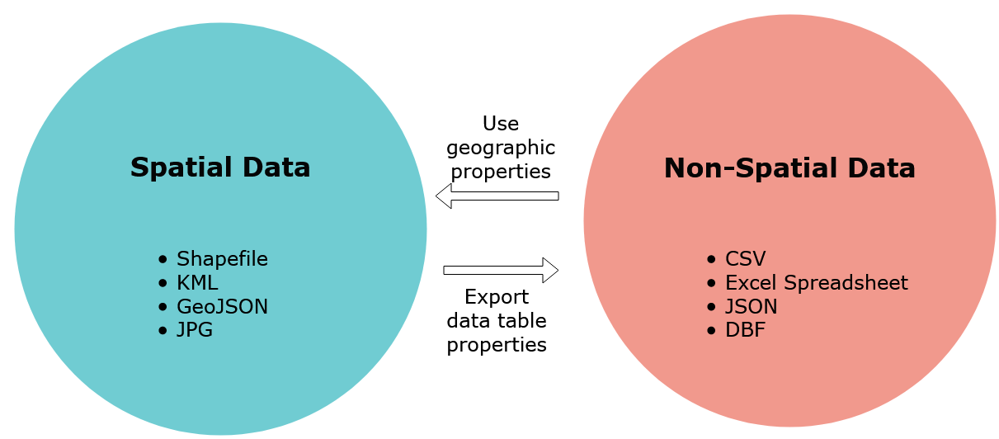

Introduction to GIS
Contents
Introduction to GIS#
===================
Special thanks to Albert Kochaphum for sharing some of his material for this workshop.
What is GIS? Depending on who you ask, GIS has two meanings:
Geographic Information System typically refers to applications and software that is used to create spatial data and to investigate spatial relationships between that data.
Geographic Information Science is the framework we use to ask questions about the spatial relationship between data.
For example, predicting the effects of climate change (rising sea-levels) on low laying areas (elevation) would be an application of Geographic Information Science, while the software to do the predictions would be an example of a Geographic Information System.
In short:
Data Types#
There are two key distinction between data types, spatial or non-spatial data.
Spatial data is data that already contains geographic information.
Common file types are the following:
Shapefiles:
.zip(these are made up of 3 or more files, and the .shp is commonly used to identify them)KML files:
.kml,.kmzGeoJSON files:
.geojsonImage files:
.jpg,.png,.tiff
Non-spatial data is data that has no geographic information.
Common non-spatial data are the following:
Excel Spreadsheets:
.xlsx,.xlsComma/Table Separated Value files:
.csvJSON files:
.jsondBase database file:
.dbf
When non-spatial data has geographic attributes, like zipcodes, addresses, city names, or even latitude/longitude coordinates it can be turned into spatial data. The distinction is that non-spatial data will only show up as tables in GIS applications.
On the other hand, spatial data that has data attributes can be turned into a non-spatial data type by saving/exporting its data as tables. The following graphic summarizes this relationship:

Spatial Data Formats#
There are several data spatial data models that you may encounter as you work with geo data. Geodata formats are commonly divided into two types, vector data or a raster data. In GIS, discrete data means that the data has a fixed location. Continuous data in GIS does not have well defined or no boundary at all, the most common example is elevation. The graphic below shows how vector data and raster data formats can represent continuous or discrete data:

Spatial Data Types (Source: Michele Tobias, UC Davis)
The graphic also illustrates how certain vector data is often better suited for discrete data, while raster data is often better used for continuous data. Let’s go into a little more detail about each!
Vector Data#
Vector data represents discrete objects in the real world with points, lines, and polygons in the dataset.
If you were to draw a map to your house for a friend, you would typically use vector data - roads would be lines, a shopping center included as an important landmark might be a rectangle of sorts, and your house might be a point (perhaps represented by a star or a house icon).
Raster Data#
Raster data represents continuous fields or discrete objects on a grid, storing measurements or category names in each cell of the grid.
Digital photos are raster data you are already familiar with. If you zoom in far enough on a digital photo, you’ll see that photo is made up of pixels, which appear as colored squares. Pixels are cells in a regular grid and each contains the digital code that corresponds to the color that should be displayed there.
You may be surprised to see jpgs listed as a data type that you may have thought to be non-spatial, but satellite imagery is commonly stored in photo formats.
Introduction to GIS for the Social Sciences#
Now that we have a good understanding of geospatial data, we can explore the GIS connection to the social sciences.
Geography is divided into physical geography (natural systems) and human geography (human-made systems). The social sciences sit within human-made systems and the data here is often captured in specific units. Such as number of people living in a specific city or the language spoken in a country. Most of the data we will encounter will be discrete.
The following election result map shows the number of people from each state that voted for either Biden or Trump in the 2020 general election.
Source: New York Times, 2020
The states themselves are the boundaries, even though the data is collected at smaller levels.
How is that possible?
Geographic Hierarchy#
Move over Aristotle: The sum is the whole of its parts!
The first law of Geography (and perhaps only) is “everything is related to everything else, but nearer things are more related than distant things.” When thinking about human data, there are many different units, countries, states, cities, and even households. Whenever this data is being summarized to larger geographies, as long as the smaller boundaries do not overlap then you can do so. However, this does not mean it is always safe to do so, why?
Keeping the first law of geography in mind, when you summarize smaller data to larger geographies (i.e. going from cities to a state), the nearer things become less related because they are summarized to a larger geographic relation. Let’s return to the election map, but break it down into counties to see how the summing of the data changed spatial relationships.
Source: USA Today, 2020
How does this map compare to the previous map?
For one thing, you can see that a state like Nevada is not completely blue and has quite a bit of Republican voters. When a whole state is considered “democrat” or blue, such types of simplifications can only occur when data from the counties is summarized upwards to the state level.
Below is an example of how the United States Census Bureau’s uses hierarchal geography: